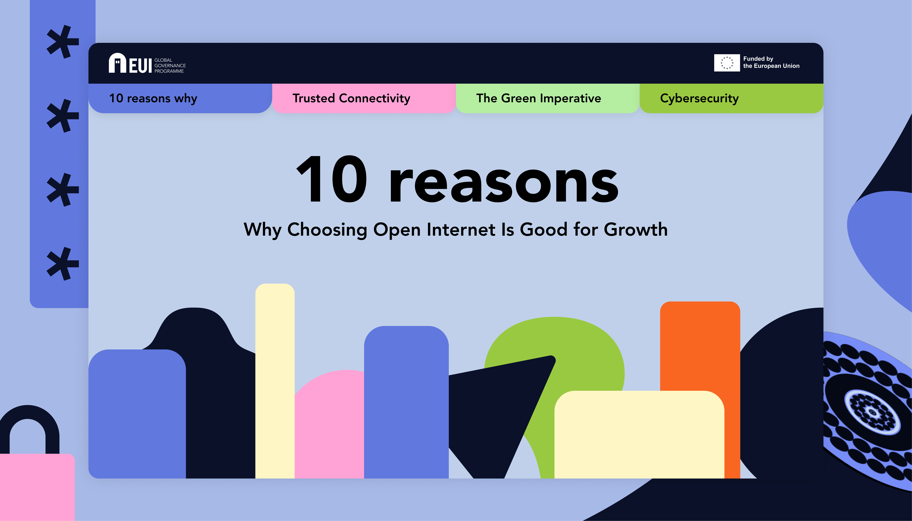
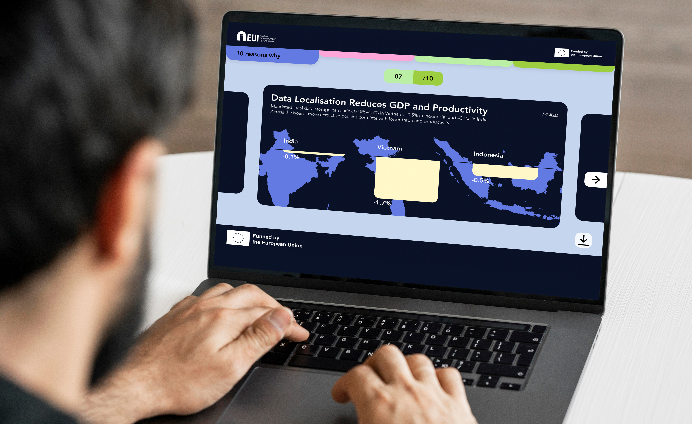
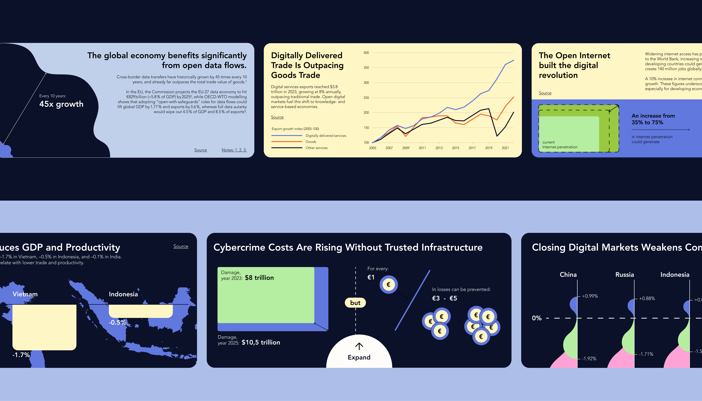
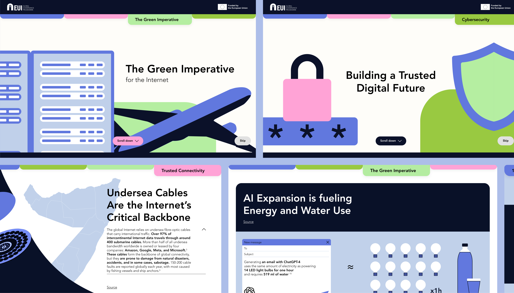
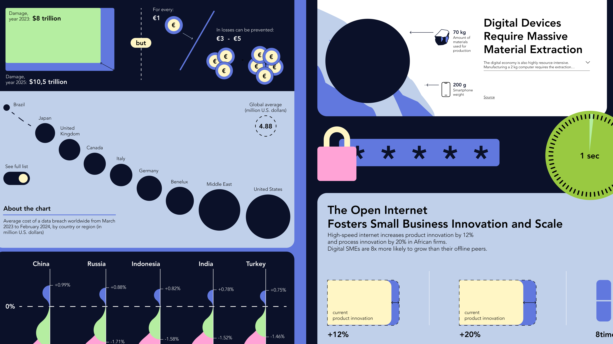
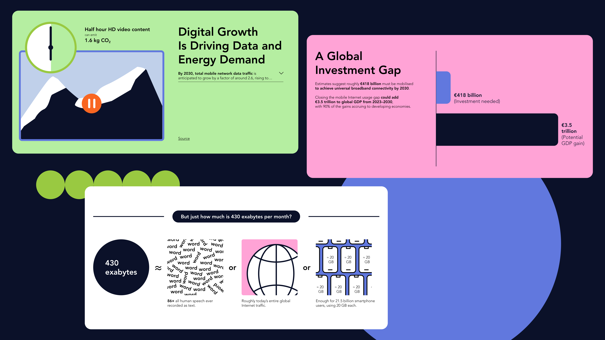

For the European University Institute (EUI), I designed a data storytelling experience in the form of a digital platform, aimed at presenting complex research through insights and key takeaways on an open and global approach to the internet.

Working with a highly valuable research dataset that was, however, fragmented into isolated data points, individual statistics, and broad macro-chapters, the main challenge was to build a cohesive narrative. The goal was to develop a clear visual and logical storytelling structure that would connect the different chapters and guide users through the discovery of insights in a light, engaging, clear way, respectful of the research’s depth.

The design phase, grounded in data analysis, led first to a redefinition of the project’s output. While the initial plan envisioned a PDF report, the research phase revealed that a static format would limit the project’s impact. Instead, a custom digital and interactive platform emerged as the most effective solution to meet both project goals and user needs.

A content architecture and user flow were developed to structure the narrative into a guided yet freely explorable experience. The platform is composed of contextual sections, individual data “pills,” and insights translated into cards and illustrated modules, enabling both linear reading and non-linear exploration.

Building on this structure, I designed a comprehensive design system, custom data visualizations, the digital interface, and bespoke illustrations. Creating all elements ad hoc ensured a high degree of flexibility, allowing each data visualization to be enhanced by illustrations in direct dialogue with the charts.

With the goal of inspiring action among stakeholders such as policymakers, institutions, and advocates, the project seeks to make an open and global approach to the internet understandable and engaging, highlighting its benefits, costs, and opportunities.
Design: Camilla De Amicis, Company: infogr8